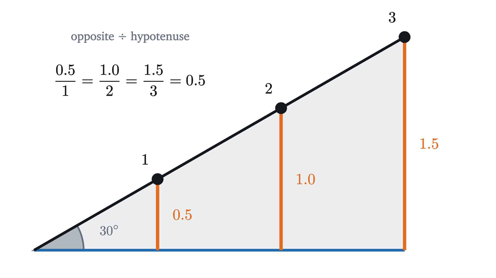
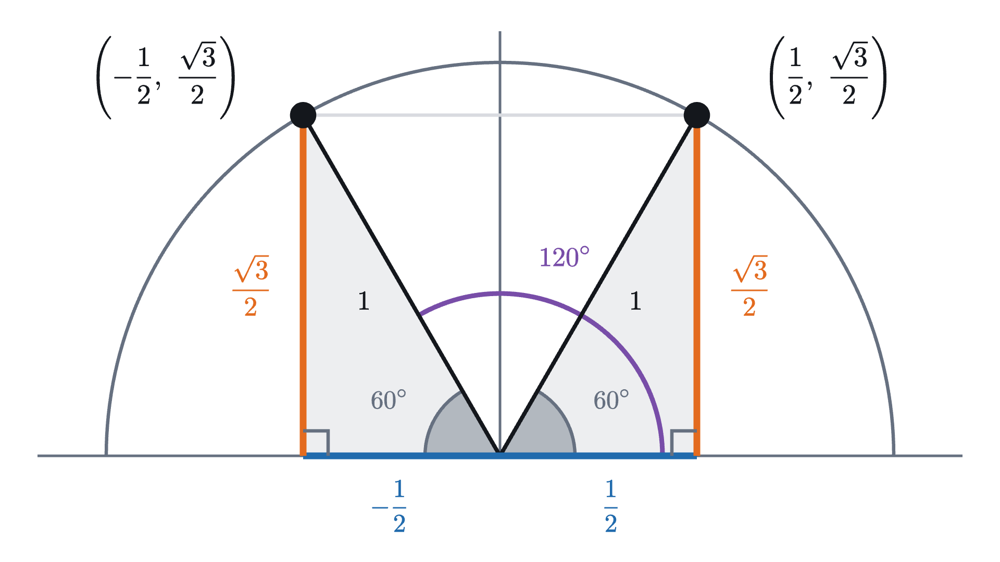
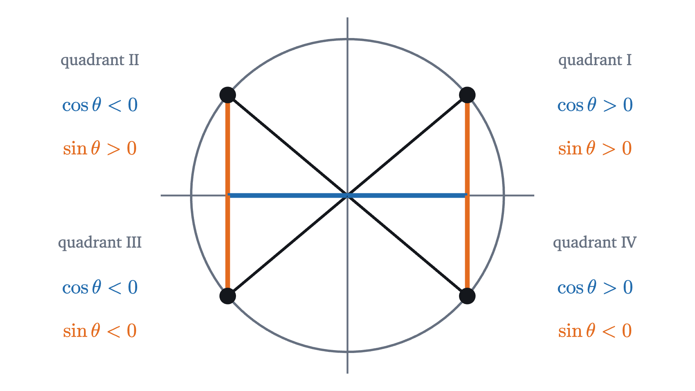
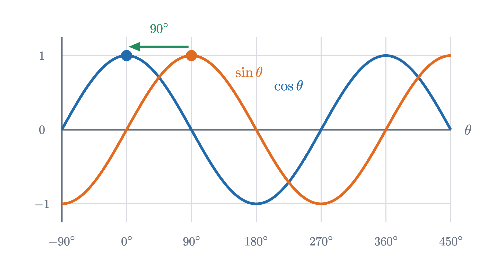

The unit circle: sine and cosine as coordinates
Sine and cosine start as ratios in a right triangle, which stops at 90°. Placing the triangle in a circle of radius 1 extends them to every angle.
AssumesSimilar triangles and why area grows as the squareThe Pythagorean theorem: a proof you can see

Type $\sin 120°$ into a calculator and it answers $0.8660$ without complaint. Yet sine, as most people first meet it, is “opposite over hypotenuse” in a right triangle containing the angle, and no right triangle contains an angle of 120°. The angles of a triangle add to 180°, the right angle uses 90° of that, and so each of the other two is less than 90°.
So the calculator is working from some other definition, one that agrees with the triangle for small angles and keeps going where the triangle gives out. You might try to guess it. Perhaps $\sin 120° = \sin 90° + \sin 30° = 1 + 0.5 = 1.5$? The calculator says $0.8660$, so that guess is wrong, and we will see later that a sine can never exceed 1. To find the real definition we go back to the triangle and look at what it is measuring.
Sine and cosine in a right triangle
Take a right triangle and pick one of its two acute angles, $\theta$. The side across from $\theta$ is the opposite side, the leg touching $\theta$ is the adjacent side, and the longest side, across from the right angle, is the hypotenuse. The triangle definitions are
These definitions only make sense if the ratio is the same in every right triangle with the angle $\theta$, large or small. Here is that fact on one angle.

The three triangles have the same three angles, 30°, 60° and 90°. Triangles with the same angles are similar, meaning each is a scaled copy of the others, and scaling multiplies every side by the same factor. So when the hypotenuse doubles, the opposite side doubles too, and their ratio does not change. That holds for any angle, which is why $\sin\theta$ is a property of the angle alone.
For 30° we can also say why the ratio is exactly $\frac{1}{2}$. Two copies of the triangle placed back to back along the adjacent side form a triangle whose angles are all 60°, an equilateral triangle. Its side is the hypotenuse, and the two opposite sides together make up one side. So the opposite side is half the hypotenuse, and $\sin 30° = \frac{1}{2}$.
The adjacent side comes from the Pythagorean theorem, which says the squares of the two legs add up to the square of the hypotenuse. With hypotenuse 1 and opposite side $\frac{1}{2}$, the adjacent side is $\sqrt{1 - \frac{1}{4}} = \frac{\sqrt{3}}{2} \approx 0.8660$, so $\cos 30° = \frac{\sqrt 3}{2}$. Those are the calculator’s digits for $\sin 120°$, which is a hint worth keeping in mind.
Since the size of the triangle does not matter, choose the most convenient size: make the hypotenuse 1. Dividing by 1 changes nothing, so in such a triangle $\sin\theta$ is the length of the opposite side and $\cos\theta$ is the length of the adjacent side.
Pause and try
A right triangle has a 45° angle and hypotenuse 1. Find the lengths of its two legs exactly, and so find $\sin 45°$ and $\cos 45°$.
Show answerHide answer
The third angle is $180° - 90° - 45° = 45°$, so the triangle has two equal angles and therefore two equal legs. Call each leg $x$. By the Pythagorean theorem $x^2 + x^2 = 1$, so $x^2 = \frac{1}{2}$ and $x = \frac{1}{\sqrt 2} = \frac{\sqrt 2}{2} \approx 0.7071$. Hence $\sin 45° = \cos 45° = \frac{\sqrt 2}{2}$.
The 60° angle uses the 30° triangle again, viewed from its other acute corner, where the roles of opposite and adjacent swap. That gives three angles with exact values.
| $\theta$ | 30° | 45° | 60° |
|---|---|---|---|
| $\cos\theta$ | $\frac{\sqrt 3}{2} \approx 0.866$ | $\frac{\sqrt 2}{2} \approx 0.707$ | $\frac{1}{2}$ |
| $\sin\theta$ | $\frac{1}{2}$ | $\frac{\sqrt 2}{2} \approx 0.707$ | $\frac{\sqrt 3}{2} \approx 0.866$ |
The triangle inside a circle
A triangle with hypotenuse 1 still stops at 90°. What rescues us is a change of viewpoint about what the two legs are. Step through the figure.
In the second step nothing about the triangle changed. We only named its legs differently: the adjacent leg is how far the far corner lies to the right of the origin, and the opposite leg is how far it lies above. For an acute angle, then, $\cos\theta$ and $\sin\theta$ are the $x$ and $y$ coordinates of a point. In the third step that point stays on a circle, because a hypotenuse of length 1 keeps it at distance 1 from the origin. The circle of radius 1 centered at the origin is called the unit circle.
Coordinates do not care whether a triangle exists. Every point of the circle has an $x$ and a $y$, including the points that a radius reaches after turning more than 90°. That suggests the definition the calculator must be using: turn through the angle, then read off the coordinates.
Past 90 degrees
Pause and try
Before reading on, find the exact coordinates of the point on the unit circle reached by turning 120° counterclockwise from the positive $x$ axis. (The radius to it makes an angle of 60° with the negative $x$ axis.)
Show answerHide answer
Drop a vertical line from the point to the $x$ axis. It forms a right triangle with hypotenuse 1 and a 60° angle at the origin, on the left of the $y$ axis. Its legs are $\cos 60° = \frac{1}{2}$ along the axis and $\sin 60° = \frac{\sqrt 3}{2}$ upward. The point is half a unit to the left of the origin and $\frac{\sqrt 3}{2}$ above, so its coordinates are $\left(-\frac{1}{2}, \frac{\sqrt 3}{2}\right) \approx (-0.5, 0.866)$.

The height of that point is $\frac{\sqrt 3}{2} \approx 0.8660$, which is the calculator’s answer for $\sin 120°$. Its horizontal coordinate is $-\frac{1}{2}$, and a calculator does report $\cos 120° = -0.5$. A negative value could never come out of a ratio of two lengths. It comes out of a coordinate without any trouble, since it only says that the point is to the left of the origin.
Here is the definition in full.
“Any real number” is the gain: 120°, 270°, 1000° and $-45°$ are all allowed, because a rotation can continue past a full turn or run backward. “Start at $(1, 0)$” and “counterclockwise” are conventions, matching the way the triangle sat on the grid with its adjacent leg along the positive $x$ axis. A new definition that reuses an old name owes us a check that the two agree where both apply.
The proof is the second step of the figure, with similar triangles supplying the reason that one triangle of hypotenuse 1 speaks for all the others.
Signs in the four quadrants
The axes cut the plane into four quadrants, numbered I to IV counterclockwise starting from the upper right. Which quadrant $P(\theta)$ lands in settles the signs of $\cos\theta$ and $\sin\theta$ at once, since these are coordinates.

On the axes themselves one coordinate is zero. A quarter turn takes $(1, 0)$ to the top of the circle, so $P(90°) = (0, 1)$, which gives $\cos 90° = 0$ and $\sin 90° = 1$. In the same way $P(0°) = (1, 0)$, $P(180°) = (-1, 0)$ and $P(270°) = (0, -1)$. These angles have no triangle at all, and the definition handles them without a special case.
Pause and try
Without a calculator, decide the signs of $\sin 200°$ and $\cos 200°$. Then decide which of the two is further from zero.
Show answerHide answer
200° is 20° past the half turn at 180°, so $P(200°)$ is in quadrant III, a little below the leftmost point $(-1, 0)$. Both coordinates are negative. The point is far to the left and only slightly down, so the cosine is the one further from zero. (The values are $\cos 200° \approx -0.940$ and $\sin 200° \approx -0.342$.)
Symmetries that give new values from old ones
The figure for 120° worked by reflecting the 60° point in the $y$ axis. The circle has other symmetries, and each of them turns into a rule about sine and cosine.
With these rules, the three exact triangles from the start of the lesson supply exact values all the way around the circle.
The graphs of sine and cosine
So far $\theta$ has been one angle at a time. Let it run, and record the height of the point against the angle.
Pause and try
Sketch a graph of the height of $P(\theta)$ against $\theta$ for $0° \le \theta \le 360°$, before you play the animation. Mark where the height is 0, where it is largest and where it is smallest. Is the graph made of straight pieces?
Show answerHide answer
The height is 0 at 0°, 180° and 360°, largest ($1$) at 90° and smallest ($-1$) at 270°. The pieces are not straight. Near 0° the point is moving almost straight up, so the height rises quickly; near 90° it is moving almost sideways, so the height hardly changes. For example the height is already $0.5$ at 30°, a third of the way to 90°. The graph is steep at the crossings and flat at the top and bottom.
The wave is the height of the point, read out as the angle advances. It repeats every 360° by rule 1, and it never leaves the band between $-1$ and $1$, because no point of a circle of radius 1 is more than 1 above or below the center.
Recording the horizontal coordinate instead gives the graph of cosine.

The two curves have the same shape. Rule 4 says why: $\sin(\theta + 90°) = \cos\theta$, so the value cosine has at $\theta$ is the value sine will have 90° later. Whatever sine does, cosine did it a quarter turn earlier.
Limits of the definition, and two mistakes
The triangle definition is the unit circle definition restricted to $0° < \theta < 90°$. Outside that range the phrase “opposite over hypotenuse” has no meaning and only the coordinates remain.
The circle also sets limits. Since $-1 \le \sin\theta \le 1$ and $-1 \le \cos\theta \le 1$ for every $\theta$, an equation such as $\sin\theta = 1.5$ has no solution, which is the reason the opening guess had to fail. And when a solution exists it is not unique. The third example found two angles in one turn with the same sine, and adding 360° to either gives more. A calculator’s inverse sine key returns only one of them.
Looking back
The obstacle was that a definition built on right triangles cannot be asked about 120°. The way past it was to notice that the two legs of a triangle with hypotenuse 1 are also the coordinates of a point, and that coordinates remain available after the triangle is gone. Replacing a definition by an equivalent one that makes sense in more cases is a move you will see again whenever a formula is stretched beyond the setting that produced it.
Because $(\cos\theta, \sin\theta)$ is a point at distance 1 from the origin, its coordinates are tied together by the Pythagorean theorem. That relation, $\sin^2\theta + \cos^2\theta = 1$, is the subject of the Pythagorean identity. Before that, the lesson on radians asks why a full turn should be 360 of anything.
Check yourself
What is $\cos 240°$?
Problems
Draw the circle for each of these. The first three repeat the lesson’s moves, the next three combine them, and the last two ask for an argument.
Problem 1
Find the exact values of $\sin 135°$ and $\cos 135°$.
Show solutionHide solution
$135° = 180° - 45°$, so $P(135°)$ is the mirror image of $P(45°) = \left(\frac{\sqrt 2}{2}, \frac{\sqrt 2}{2}\right)$ in the $y$ axis, which is $\left(-\frac{\sqrt 2}{2}, \frac{\sqrt 2}{2}\right)$. So $\sin 135° = \frac{\sqrt 2}{2}$ and $\cos 135° = -\frac{\sqrt 2}{2}$. The signs fit quadrant II.
Problem 2
Find the exact values of $\sin 300°$ and $\cos 300°$.
Show solutionHide solution
$300° = -60° + 360°$, so $P(300°) = P(-60°)$ by the full turn rule, and $P(-60°)$ is the mirror image of $P(60°) = \left(\frac{1}{2}, \frac{\sqrt 3}{2}\right)$ in the $x$ axis. So $P(300°) = \left(\frac{1}{2}, -\frac{\sqrt 3}{2}\right)$, giving $\cos 300° = \frac{1}{2}$ and $\sin 300° = -\frac{\sqrt 3}{2}$. The point is in quadrant IV, right of the origin and below it, which matches.
Problem 3
(a) In which quadrant is $\sin\theta < 0$ and $\cos\theta > 0$? (b) In which quadrant does the point at $1000°$ lie, and what are the signs of $\sin 1000°$ and $\cos 1000°$?
Show solutionHide solution
(a) A negative sine puts the point below the $x$ axis and a positive cosine puts it right of the $y$ axis. That is quadrant IV. (b) Remove full turns: $1000° - 2 \times 360° = 280°$, so $P(1000°) = P(280°)$. Since $270° < 280° < 360°$ the point is in quadrant IV, so $\sin 1000° < 0$ and $\cos 1000° > 0$. (A calculator gives about $-0.985$ and $0.174$.)
Problem 4
Find every angle $\theta$ with $0° \le \theta < 360°$ and $\cos\theta = -\frac{1}{2}$.
Show solutionHide solution
We need the points of the circle whose $x$ coordinate is $-\frac{1}{2}$. We know $\cos 60° = \frac{1}{2}$. Mirroring in the $y$ axis changes the sign of the cosine: $\cos(180° - 60°) = \cos 120° = -\frac{1}{2}$. Mirroring that point in the $x$ axis keeps the cosine: $\cos(-120°) = -\frac{1}{2}$, and $-120° + 360° = 240°$. The vertical line $x = -\frac{1}{2}$ meets the circle in exactly two points, so these are all: $\theta = 120°$ and $\theta = 240°$.
Problem 5
A circle of radius $r$ is centered at the origin. Explain why the point on it at angle $\theta$ from the positive $x$ axis is $(r\cos\theta, r\sin\theta)$, and find the point at 150° on the circle of radius 5.
Show solutionHide solution
Scaling the plane by the factor $r$ about the origin multiplies both coordinates of every point by $r$. It carries the unit circle to the circle of radius $r$, and it moves each point along its own ray from the origin, so it does not change the angle. The point $(\cos\theta, \sin\theta)$ therefore goes to the point at angle $\theta$ on the larger circle, which is $(r\cos\theta, r\sin\theta)$. For $r = 5$ and $\theta = 150°$, using $\cos 150° = -\frac{\sqrt 3}{2}$ and $\sin 150° = \frac{1}{2}$ from the first example, the point is $\left(-\frac{5\sqrt 3}{2}, \frac{5}{2}\right) \approx (-4.33, 2.5)$.
Problem 6
A Ferris wheel has radius 20 m and its hub is 22 m above the ground. A rider starts level with the hub, at the rightmost point, and the wheel turns counterclockwise. (a) How high is the rider after the wheel has turned 210°? (b) At which angles in the first turn is the rider 32 m above the ground?
Show solutionHide solution
Measured from the hub, the rider is at the point at angle $\theta$ on a circle of radius 20, so by the previous problem the rider’s height above the hub is $20\sin\theta$ meters and the height above the ground is $22 + 20\sin\theta$ meters.
(a) $210° = 30° + 180°$, and a half turn reverses both coordinates, so $\sin 210° = -\sin 30° = -\frac{1}{2}$. The height is $22 + 20 \times \left(-\frac{1}{2}\right) = 12$ m.
(b) $22 + 20\sin\theta = 32$ gives $\sin\theta = \frac{1}{2}$. One solution is $\theta = 30°$, and its mirror image in the $y$ axis is $\theta = 180° - 30° = 150°$. A horizontal line meets the circle at most twice, so the rider is at 32 m when the wheel has turned 30° and again at 150°.
Problem 7
The point $(-0.6, 0.8)$ is at distance $\sqrt{0.36 + 0.64} = 1$ from the origin, so it is $P(\theta)$ for some angle $\theta$. Without finding $\theta$, give the values of $\sin\theta$, $\cos\theta$, $\sin(\theta + 180°)$, $\cos(\theta + 90°)$, $\sin(180° - \theta)$ and $\cos(-\theta)$.
Show solutionHide solution
By definition $\cos\theta = -0.6$ and $\sin\theta = 0.8$. A half turn sends $(x, y)$ to $(-x, -y)$, so $\sin(\theta + 180°) = -0.8$. The quarter turn rule gives $\cos(\theta + 90°) = -\sin\theta = -0.8$. The mirror in the $y$ axis keeps the height: $\sin(180° - \theta) = 0.8$. The mirror in the $x$ axis keeps the horizontal coordinate: $\cos(-\theta) = -0.6$.
Problem 8
(a) Find every angle $\theta$ with $0° \le \theta < 360°$ and $\sin\theta = \cos\theta$, and prove there are no others. (b) For which angles in that range is $\sin\theta > \cos\theta$?
Show solutionHide solution
(a) $\sin\theta = \cos\theta$ says that $P(\theta)$ has equal coordinates, so it lies on the line $y = x$. That line passes through the origin and through $P(45°) = \left(\frac{\sqrt 2}{2}, \frac{\sqrt 2}{2}\right)$. A line through the center of a circle meets the circle in exactly two points, at opposite ends of a diameter, so the only other point is the one a half turn away, $P(225°) = \left(-\frac{\sqrt 2}{2}, -\frac{\sqrt 2}{2}\right)$. The solutions are $\theta = 45°$ and $\theta = 225°$.
(b) $\sin\theta > \cos\theta$ says $y > x$, so the point lies above the line $y = x$. The line cuts the circle into two arcs, and the one above it runs counterclockwise from 45° to 225°, passing through the top of the circle. So $\sin\theta > \cos\theta$ exactly when $45° < \theta < 225°$. Check with one angle on each arc: at 90°, $1 > 0$ holds; at 0°, $0 > 1$ fails.